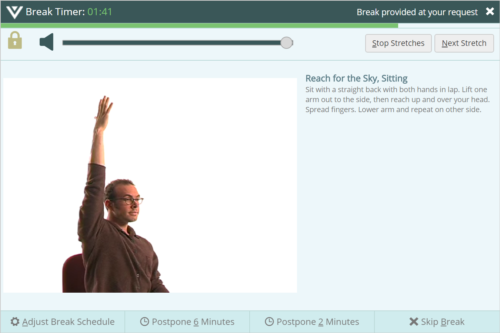

BreakTimer is an RSIGuard feature that suggests when to take breaks based on a model of your computer use and rules you can create.
What does that mean? Perhaps you presently use a timer (e.g., a kitchen timer or a software tool) that reminds you to take breaks from computer work based on time passage, keystroke count, or mouseclick count. While such a tool is better than no tool at all, BreakTimer takes into account how you work, your current computing health, and your personality before making break suggestions.
The BreakTimer model considers both how much you use the mouse and keyboard as well as how you use them. The model takes into account typing intensity, quantity and quality of keystrokes, mouse clicks, mouse movement, hand posture from key combinations, mouse clicking speed and style, natural resting patterns, and other factors. It also takes into account some factors that you can define.
Ultimately, the BreakTimer is a tool that reminds you to rest from the computer when the model identifies that rest would be beneficial.

One of the most important and powerful aspects of the RSIGuard BreakTimer is that it can be configured to meet any individual's needs. Be sure to explore the BreakTimer settings to learn more.